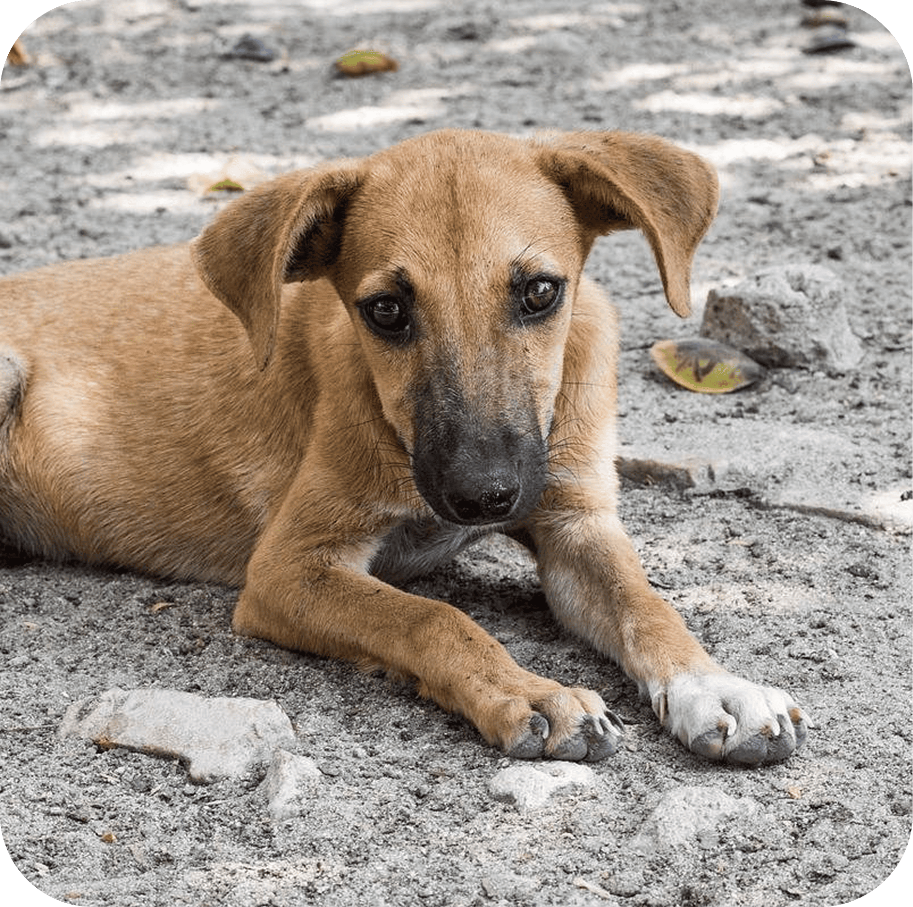
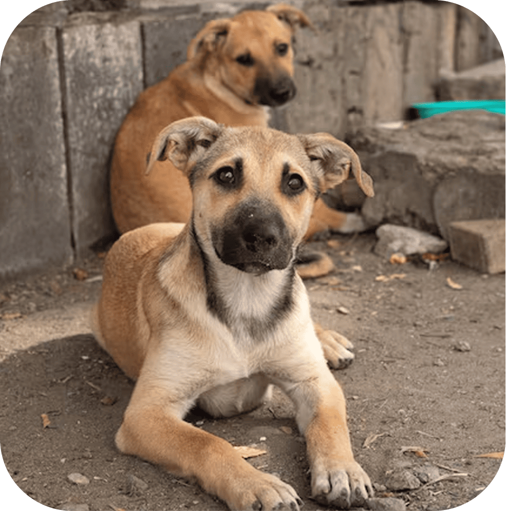
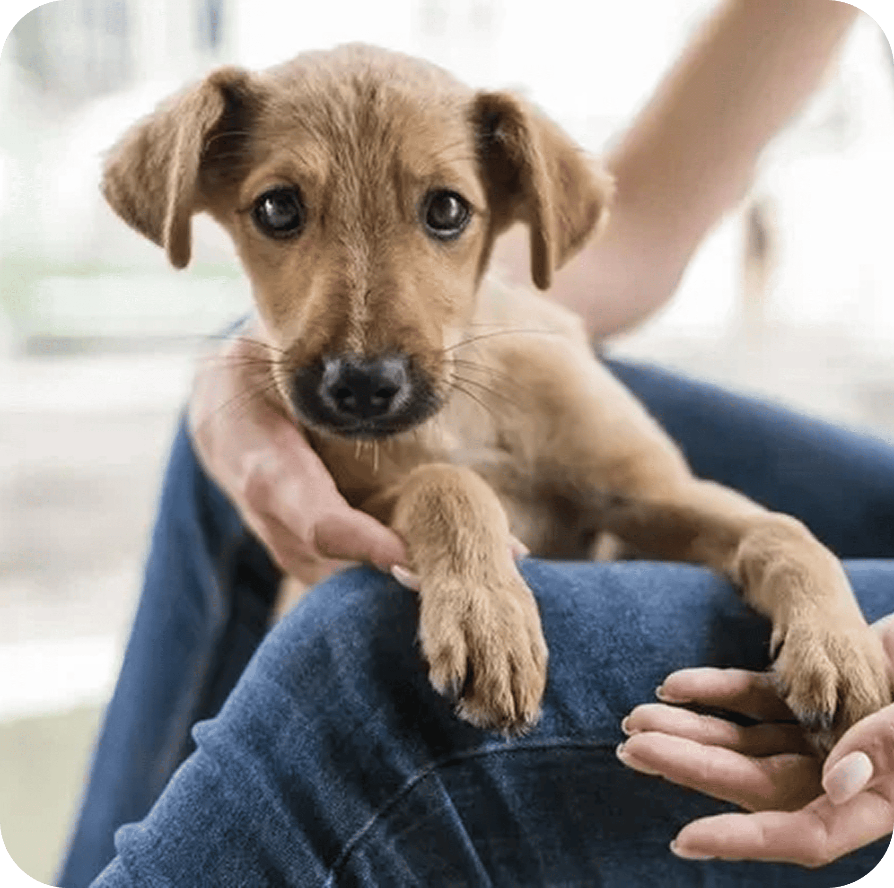

Ellos nos necesitan. Vos podés hacer la diferencia.
Rescatamos, rehabilitamos y encontramos familias para animales abandonados. Con tu ayuda garantizamos sus cuidados diarios.
¡Ayudanos!


Adoptá un callejerito y cambiá dos vidas.
Adoptar es mucho más que sumar una mascota: es regalarles una vida llena de cuidado, respeto y segundas oportunidades. Cada uno de nuestros rescatados dejó atrás una historia difícil y hoy espera encontrar una familia definitiva.
Además, cuando abrís las puertas de tu casa, liberás un espacio en el refugio para que podamos seguir rescatando y recuperando a otros callejeritos.
¡Adoptá!Ayudanos a seguir salvando vidas
Cada colaboración cuenta para darles un nuevo
comienzo a los callejeritos que más lo necesitan.
Tu ayuda es fundamental para que sigamos
dándoles segundas oportunidades. Juntos, podemos demostrar
que el amor lo cambia todo.